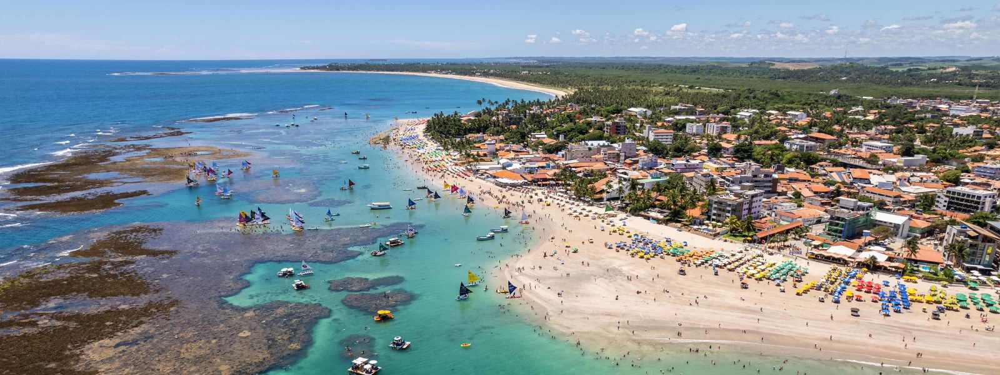

Pernambuco é um estado localizado na região Nordeste do Brasil, conhecido por sua rica cultura, história e belezas naturais. Sua capital, Recife, é famosa por suas praias, o Recife Antigo e o Carnaval vibrante. O estado também abriga Olinda, uma cidade histórica com um centro colonial bem preservado, declarado Patrimônio da Humanidade pela UNESCO. Pernambuco tem uma economia diversificada, com destaque para a indústria, o comércio, a agricultura (especialmente a produção de cana-de-açúcar, frutas e milho) e o turismo. A cultura pernambucana é muito forte, com manifestações tradicionais como o frevo, o maracatu, o forró e o artesanato em renda e cerâmica. A culinária local é deliciosa, com pratos típicos como a tapioca, o bolo de rolo, a caldeirada de peixe e a carne de sol. Pernambuco é um estado que combina história, cultura vibrante e belezas naturais, sendo um dos destinos mais interessantes do Nordeste brasileiro.
